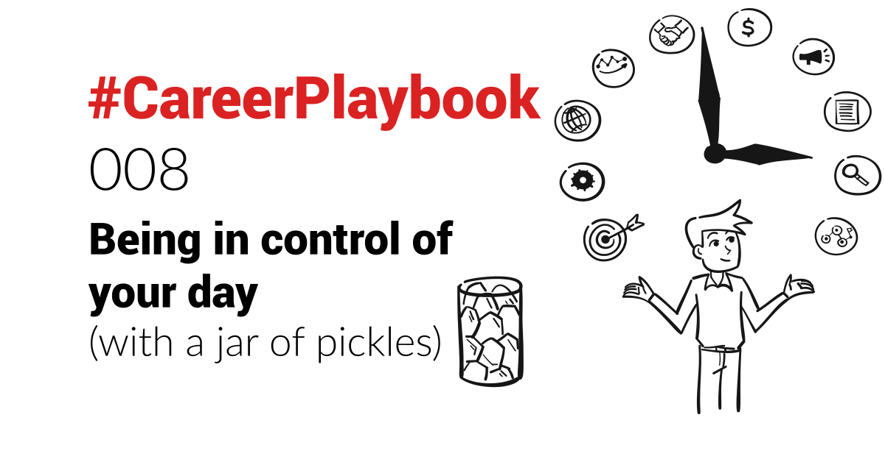
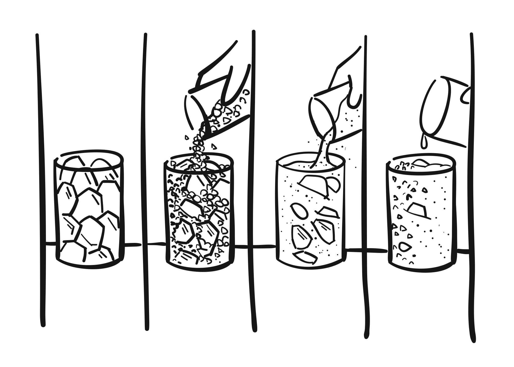

"The bad news is, time flies. The good news is, you're the pilot"
-unknown
Time management and being in control of one's day with so many needs, forces and distractions pulling you in different directions seems to be one of the main challenges of busy professionals. Especially combined with juggling family time.
Time as a jar
A decade ago, I read about the following analogy, which resonated with me and has guided my time management since.
Imagine a jar. The kind in which you keep pickles in. Or cookies, if it's easier for you to to empty it.
Now imagine you have rocks, pebbles, sand and water.
If you fill the jar with sand or water first, you will struggle to add pebbles and rocks. It will be full very quickly, with not many rocks and pebbles.
However if you put rocks in it first, you will maximise the number you can put in it.
Then, you can still add pebbles to it, which will fill the interstices - the space between the rocks.
Once that is done, you can still add sand to the jar, which will fill the void between the rocks and pebbles.
And you might even be able to add some water in it!
Like that:

You probably will have guessed it:
The jar itself represents the time available to you in a day. Limited.
Rocks represent big (and/or important) tasks.
Pebbles, small ones.
Sand, micro ones (like emails).
And water, well.. distractions.
So the morale of the story - though it's not really a story - is that in order to maximise what you can achieve in one day, you need to put in the tasks in order of time or importance. In other words, if you organise your tasks in advance, in the right order, blocking first the time for your rocks and pebbles, you can fit more into one day/jar. And your "sand" and "water" tasks will just fit around.
How does that translate in real-life? Let me tell you my approach.
How to make it work
For years now, my approach has been to use my calendar to design my days.
It is not easy, and requires discipline. I'm not claiming to be perfect at it - but the system works well for me.
Here it is:
Key for me is to define in advance - say at the start of a week, or day - specific chunks of time, dedicated to given tasks. Each with its own alarm.
And very important (to me at least) is to colour-code each chunk, by type. External meetings (purple), scheduled meetings at my desk (orange), unscheduled calls I need to make (yellow), writing time (pink), personal (blue), important task (red), etc..
If you are visual, like me, it helps massively to mentally prepare and make sense of it at a glance.
Except for the scheduled meetings, the other tasks are set as "Free" - so if needed, meetings can be scheduled by others. Colleagues, or, in my case, prospects using my online calendaring system - I'm using Calendly.
I'm also using Fantastical (https://flexibits.com/fantastical) on Mac, which I find better/more powerful than the native Outlook calendar.
Now you will ask (or scoff): if others can schedule meetings freely, how is that being in control?
Well, ultimately no one works in a silo, especially in Sales, or as a founder. If a prospect wants to have a meeting, it becomes a priority.
2 ways to address that:
- if I really need to deliver a time-critical task with a deadline, I can always set that chunk of time to "Busy".
- as a general rule, chunks of time should not be deleted, but rather moved around to the nearest free slot.
So there is some flexibility to it, but as much as possible, I try to move blocks around rather than just forego one if something unexpected happens.
But I find that preparing for my days ahead, and visually seeing it during the day, is very helpful. It puts me more in control, while not having to think about what to do between 2 scheduled events, risking ending up doing random stuff.
So I ensure the week ahead is planned as needed, based on priorities, family, etc.. and then during the day/week, I just look at my calendar for “what’s next”.
Something that can be seen as a "downside" to this system - which people close to me know - is that "if it's not in my calendar, it does not exist" (to paraphrase a saying known in Sales).
It's also important, if you can, to find your “rhythm”, ie what time of day is best for you to do “focus work”, vs. meetings vs. needing a break, etc..
For example, I know that I do my best focus work in the morning, and in the evening. Afternoons are best for emails/outreaches/meetings.
Just like meditation - if that's your thing - the key to this system is diligence and persistence, and allowing yourself to fail (as it's inevitable).
There are further tactics I'm using - like identifying tasks that are low value and can be outsourced, or repetitive and can be automated, as well as removing distractions. I'll address these in future #CareerPlaybook posts.
This system maximises my focus on high-value work, and enables me to manage priorities.
Combining with family life
Side note to (young) parents: juggling your business life with your family life (like taking care of the kids, or attending a school event) can be a challenge.
Using a separate shared calendar for the family with your partner, and "inviting" your professional email for the events that require you, allows to mix both, and maintaining a single overview in your business calendar, blocking out important family time & events.
I am using an Exchange calendar for our family, associated with a family email address.
Bonus: that family email acts as a distribution list to both my wife and I, and is communicated to school and extracurricular organisations (like sports associations) - so we are both informed and in the loop simultaneously.
Auditing where you spent your time
Studies and personal experience have shown that we are not good at assessing where we spend our time. We believe one thing, but reality looks usually different.
Retroactively readjusting in your calendar where you actually spent your time, by putting in colour-coded blocks of time at the end of your day for what you really did is very helpful. It is a good way to assess how well you have been in control of your time, where you actually spent your time, and make adjustments to the system as needed.
Following this system and looking at your past week (or month, or year) can be eye-opening (literally too, as it’s very visual), and trigger a wake-up call to change your approach as to how you manage your time.
Implementing the necessary changes is the hard part though, but “knowing is half the battle” as the saying goes.
Let's recap
To maximise the number of rocks and pebbles - big, important tasks you need to work on:
- Schedule your days in advance
- Ensure your longer, higher importance and "focus" tasks are defined as clear chunks of time
- Use a colour code per type of task
- Move chunks of time if needed, but don't delete them
- Be diligent and persistent in implementing the system, but allow yourself to fail at times
So just remember to fill your jar first with rocks and pebbles first (your critical tasks) - and use the void in between for sand and water (micro-tasks and distractions).
Try it out, and let me know what your experience with it is. Or what your challenges are.